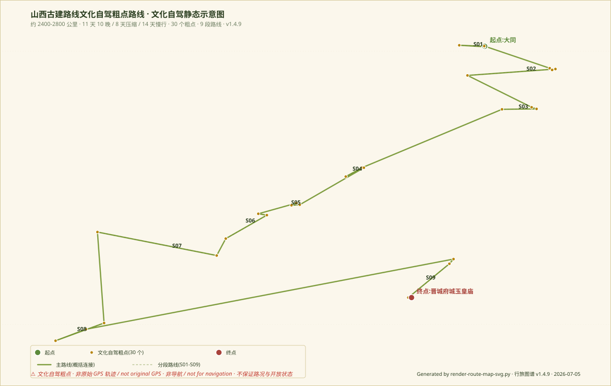

从大同到晋东南，沿着木构、佛寺、壁画与地方信仰
进入中国古代建筑现场
北京 → 大同 → 应县 → 五台山周边 → 太原 → 平遥 / 介休 → 长治 / 晋城 → 北京
本路线不是「全省古建一次看完」，而是把山西古建按四个主题拆开：
· 北部 · 石窟与辽金木构（大同 / 应县 / 五台山）
· 中部 · 晋祠与平遥体系（太原 / 晋中）
· 南部 · 壁画与道教建筑（临汾 / 运城）
· 晋东南 · 早期木构（长治 / 晋城）
不同版本下选 2–3 个主题重点看。
从北魏云冈到辽金佛光寺，从唐构南禅寺到宋金彩塑，
一条关于中国古代建筑最深厚一面的路线
标注为「标准深度版」，不是轻松版。出发前必须核实开放状态、维修闭馆、预约政策。
| Day | 区域 / 过夜 | 核心古建 | 主题 | 驾驶 / 参观 | 可压缩？ |
|---|---|---|---|---|---|
| D1 | 大同 | 云冈石窟 / 华严寺 / 善化寺 | 北魏石窟 + 辽金寺院 | 轻 / 重 | 华严寺可删减 |
| D2 | 浑源 | 悬空寺 / 恒山 | 山岳寺院 + 边地建筑 | 中 / 中 | 恒山可删减 |
| D3 | 应县 | 应县木塔 / 净土寺 | 辽代木构主轴 | 短 / 重 | 净土寺可删减 |
| D4 | 五台山 | 佛光寺 / 南禅寺 | 唐构主轴 | 中 / 重 | 不可压缩 |
| D5 | 太原 | 晋祠 / 山西博物院 | 北宋 + 博物馆 | 中 / 中 | 博物馆可拉长 |
| D6 | 平遥 | 平遥古城 / 双林寺 / 镇国寺 | 明清古城 + 宋代彩塑 | 短 / 重 | 古城可拉长 |
| D7 | 介休 / 灵石 | 后土庙 / 张壁古堡 / 王家大院 | 道教 + 堡寨 + 晋商 | 短 / 中 | 王家大院可删减 |
| D8 | 临汾 / 洪洞 | 广胜寺 / 飞虹塔 | 元代琉璃塔 | 中 / 重 | 不可压缩 |
| D9 | 隰县 | 小西天 | 明代悬塑 | 长 / 重 | 小西天不可压缩 |
| D10 | 运城 / 芮城 | 永乐宫 / 解州关帝庙 | 元代壁画 + 关公祖庙 | 中 / 中 | 关帝庙可删减 |
| D11 | 长治 | 法兴寺 / 崇庆寺 / 观音堂 | 唐宋彩塑 | 短 / 重 | 崇庆寺可删减 |
| D12 | 晋城 / 高平 | 青莲寺 / 玉皇庙 / 开化寺 | 唐宋 + 宋代壁画 | 中 / 重 | 开化寺可删减 |
出发前阅读一遍。古建重点在顺序：先看山门，再看主殿，最后看塑像与壁画。
| Day | 今日导游词 | 建议停留 | 读图顺序 | 拍摄点 | 今日不要硬加点 |
|---|---|---|---|---|---|
| D1 大同 | 石窟与辽金佛寺。今天先看云冈石窟（北魏），下午看华严寺（辽金） | 半天 云冈 | 石窟 → 佛像 → 寺院 | 云冈大道 + 华严寺薄伽教藏殿 | 不要在云冈看后加善化寺以外的点 |
| D2 浑源 | 悬空寺与山地宗教景观。今天看悬空寺与恒山 | 1–2h 悬空寺 | 崖壁 → 梠桭 → 山势 | 悬空寺全景 + 恒山远景 | 不要登顶恒山（太累） |
| D3 应县 | 木塔与县城尺度。今天看应县木塔 + 净土寺 | 2–3h 木塔 | 塔外看 → 塔内看 → 塔面看 | 应县木塔 5 层逐层 + 净土寺顽伽严 | 不要不看净土寺 |
| D4 五台山 | 早期木构的朝圣山地。今天看佛光寺 + 南禅寺 | 半天 佛光寺 | 山门 → 东大殿 → 佛光寺全体 | 东大殿枋 、 塑像 | 不要不去佛光寺 |
| D5 太原 | 晋祠与晋阳记忆。今天看晋祠 + 山西博物院 | 半天 晋祠 | 水镜台 → 会仙桥 → 圣母殿 | 难老泉 · 宋塑侍女 | 不要不去晋祠 |
| D6 平遥 | 古城、彩塑与寺院系统。今天看平遥古城 + 双林寺 + 镇国寺 | 半天 双林寺 | 古城 → 双林寺 → 镇国寺 | 双林寺彩塑 · 平遥城墙全景 | 不要在平遥不去双林寺 |
| D7 介休 / 灵石 | 地方信仰与堡寨。今天看后土庙 + 张壁古堡 + 王家大院 | 2–3h 张壁 | 堡外 → 堡内 → 下看 | 张壁金顶天外三层院落 | 不要不去后土庙 |
| D8 洪洞 / 临汾 | 琉璃、飞虹塔与民居。今天看广胜寺 + 飞虹塔 | 2–3h 广胜寺 | 水神庙壁画 → 飞虹塔 → 下寺 | 飞虹塔琉璃 · 水神庙戏曲壁画 | 不要只看飞虹塔不看壁画 |
| D9 隰县 | 小西天的悬塑世界。今天看小西天 | 2–3h 小西天 | 山门 → 上楼 → 向上看 | 小西天顶部悬塑 · 须弥座 33 佛 | 不要在临汾停留不过夜 |
| D10 运城 / 芮城 | 永乐宫与道教壁画。今天看永乐宫 + 解州关帝庙 | 2–3h 永乐宫 | 三清殿壁画 → 纯阳殿 → 关帝庙 | 永乐宫三清殿 · 朝元图 | 不要在运城加鹳雀楼 |
| D11 长治 | 晋东南早期木构。今天看法兴寺 + 崇庆寺 + 观音堂 | 2–3h 法兴寺 | 园照殿 → 唐塑 → 看石塔 | 法兴寺十二圆觉 | 不要在晋东南加殷虚 |
| D12 晋城 / 高平 | 彩塑、木构与山地村镇。今天看青莲寺 + 府城玉皇庙 + 开化寺 | 半天 玉皇庙 | 玉皇庙 28 宿 → 青莲寺 → 高平 | 玉皇庙造像 · 青莲寺佛殿 | 不要在晋城加车轱灵山 |
只写区间。不写门票与实时开放时间。开放状态 / 维修闭馆 / 预约政策出发前必须核实。
| 地点 | 建议停留 | 读图重点 | 可压缩方式 | 不建议压缩原因 |
|---|---|---|---|---|
| 云冈石窟 | 半天 | 炨火洞、宝塔洞、礼佛浮雕 | 只看 16–20 窟 | 云冈是中国不同时期北魏石窟汇总 |
| 华严寺 | 1–2h | 薄伽教藏殿塑像 + 露齿菩萨 | 只看薄伽教藏殿 | 遵代主轴一点 |
| 善化寺 | 1h | 金代大雄宝殿 | 只看完殿 | 遵代主轴一点 |
| 应县木塔 | 2–3h | 明层 / 暗层 / 柱网 | 逐层不上 | 是中国仅存最高木塔 |
| 佛光寺 | 2–3h | 东大殿 / 佛塑 / 壁画 | 只看东大殿 | 中国现存最古木构 |
| 南禅寺 | 1h | 释迦佛像 / 胁侍 | 不看四周 塑像 | 是中国最古木构 |
| 晋祠 | 半天 | 圣母殿 / 宋塑 / 鱼沼飞梁 | 只看圣母殿 | 北宋木构与彩塑都集于此 |
| 双林寺 | 2–3h | 诸殿彩塑 | 只看千佛殿 | 彩塑博物馆 |
| 镇国寺 | 1h | 五代彩塑 | 只看万佛殿 | 中国仅存五代彩塑 |
| 广胜寺 / 飞虹塔 | 2–3h | 飞虹塔琉璃 + 水神庙壁画 | 只看飞虹塔 | 琉璃 + 壁画双看点 |
| 隰县小西天 | 2–3h | 顶部悬塑 + 须弥座 | 只看大雄宝殿顶 | 明代悬塑博物馆 |
| 永乐宫 | 2–3h | 三清殿朝元图 | 只看三清殿 | 元代壁画主轴 |
| 法兴寺 | 1h | 园照殿彩塑 | 只看园照殿 | 唐塑 |
| 崇庆寺 | 1h | 宋金彩塑 | 只看三大士殿 | 宋金彩塑主轴 |
| 青莲寺 | 1h | 佛殿 / 唐碑 | 只看佛殿 | 唐宋过渡点 |
| 府城玉皇庙 | 1h | 28 宿 / 宋金元造像 | 只看后院 | 20 宿造像博物馆 |
现场按顺序读。顺序不对，会看不懂。
不能拍时要遵守现场规定，用文字记录空间关系。
7 天只能看骨架。南部与晋东南难以兼顾，必须二选一或压缩。首次去山西优先北部 + 中部。
云冈石窟 + 华严寺
应县木塔 + 悬空寺（上午木塔 / 下午悬空寺 + 返大同或太原）
佛光寺 + 南禅寺（上午出发 / 下午完成）
晋祠 + 山西博物院
平遥古城 + 双林寺 + 镇国寺
小西天或永乐宫选一
法兴寺 / 青莲寺 / 玉皇庙选重点
放慢节奏，给大同、五台山、平遥、晋东南更多时间。适合拍摄、写作、古建学习。每 3–4 天安排一个低强度日。
云冈、悬空寺、应县木塔、净土寺。大同三天可插一天博物馆。
佛光寺 + 南禅寺 + 延庆寺。五台山两天可插一天低强度日。
晋祠、山西博物院、蒙山大佛、崇善寺。
平遥古城 + 双林寺 + 镇国寺 + 张壁古堡 + 后土庙 + 王家大院。
广胜寺 + 飞虹塔 + 洪洞大槐树寻根。
小西天 + 东岳庙。
永乐宫 + 解州关帝庙 + 鹳雀楼（远观）。
法兴寺、崇庆寺、观音堂、晋祠（高平）、开化寺、玉皇庙、青莲寺。
预留休整、博物馆半天或酒店休整。
进入古建现场前，先记住这六个观察顺序。现场看什么，远比打卡重要。
不要只拍照，要看三件事：
⚠️ 重要提醒：山西绝大多数寺院的彩塑和壁画殿堂内禁止拍照，闪光灯会加速颜料剥落。请用眼睛和笔记代替相机。
进入每个古建现场前，扫一眼这 10 项。勾选会保存在浏览器，方便行程中查看进度。
全线拆为 5 个研究段落 + 返程，各段主题明确，点位相对集中
分级参考：研究价值 + 可达性 + 资料可信度。所有具体信息（开放时间/门票/停车）均需出发前再次核对
本研究框架下，全线研究与观光的最高优先点位。开放时间、门票、停车均需出发前再次核对。
时间和路线允许时，强烈建议纳入。
依据路线顺路程度和开放情况补充，不强行纳入正式路线。
纯 SVG 简化示意，展示路线顺序与山西地理分区。不追求真实比例
为什么不能把所有山西古建都塞进一条短线？
11 天主路线 / 8 天压缩版 / 14 天慢行版。待校准
推荐主路线。每天给出住宿城市、核心景点、备选景点、取舍提醒、Plan B。每天车程区间与驾驶强度分级。出发前需核对
仅适合时间有限的旅行者。8 天会舍弃： 双塔寺、介休后土庙、长治观音堂、青莲寺 等点位。晋东南段落压缩为单日往返。不建议硬塞
慢行版。适合：慢速看古建、多留博物馆和壁画彩塑时间、减少连续长途驾驶、给晋东南更多时间。每日只写大结构。
11 天主路线的上午 / 中午 / 下午 / 晚上 分时草案。 保持草案性质，未实地验证
| Day | 住宿 | 上午 | 中午 | 下午 | 晚上 |
|---|---|---|---|---|---|
| 1 | 大同 | 北京出发 + 行车 | 大同午餐 | 华严寺 | 大同古城墙夜景 / 简餐 |
| 2 | 大同 | 云冈石窟深度游览 | 云冈附近午餐 | 善化寺 | 大同晚餐 + 休整 |
| 3 | 应县 | 大同出发 → 应县 | 应县午餐 | 应县木塔深度游览 | 应县住宿 |
| 4 | 五台山 | 佛光寺 | 五台山附近午餐 | 南禅寺 | 五台山住宿 |
| 5 | 太原 | 五台山 → 太原 + 太原老城游 | 太原午餐 | 晋祠 | 双塔寺夜景 |
| 6 | 平遥 | 太原 → 平遥 | 平遥午餐 | 镇国寺 + 双林寺 | 平遥古城夜景 |
| 7 | 隰县 | 平遥 → 临汾 → 隰县 | 途中午餐 | 小西天 | 隰县住宿 |
| 8 | 长治 | 隰县 → 长治 | 长治午餐 | 长治观音堂 | 长治住宿 |
| 9 | 长治 | 崇庆寺 | 长子县午餐 | 法兴寺 | 长治休整 |
| 10 | 晋城 | 长治 → 晋城 | 晋城午餐 | 玉皇庙 + 青莲寺 | 晋城住宿 |
| 11 | 北京 | 晋城 → 北京返程 | 途中服务区 | 途中服务区 | 抵达北京 |
主线必入 / 主线强烈推荐 / 主线备选 / 压缩版可舍弃 / 后续专题路线
v1.3 之前必须核对的内容
纯 SVG 简化示意，展示路线顺序与山西地理分区。不追求真实比例
v1.5.1 新增 · 由 routes-manifest.json 驱动 · 状态徽章 · 摘要 · 下载 · 相关路线推荐
v1.4.9 新增 · 文化自驾粗点数据 · CSV / GeoJSON / GPX 下载 + 静态 SVG 预览
本路线已接入文化自驾粗点数据，可下载 CSV / GeoJSON / GPX，并查看静态 SVG 预览。数据用于研究、写作和行程规划，不是实时导航，不保证路况、开放状态、门票、预约、维修闭馆或预约信息。
详细数据资产与规范见：data/routes/README.md · 路线数据索引 · ROUTE_DATA_SPEC

为什么不能把所有山西古建都塞进一条短线？
11 天主路线 / 8 天压缩版 / 14 天慢行版。待校准
推荐主路线。每天给出住宿城市、核心景点、备选景点、取舍提醒、Plan B。出发前需核对
仅适合时间有限的旅行者。8 天会舍弃：双塔寺、介休后土庙、长治观音堂、青莲寺等点位。不建议硬塞
慢行版。适合：慢速看古建、多留博物馆和壁画彩塑时间、减少连续长途驾驶、给晋东南更多时间。
11 天主路线的上午 / 中午 / 下午 / 晚上 分时草案。保持草案性质，未实地验证
| Day | 住宿 | 上午 | 中午 | 下午 | 晚上 |
|---|---|---|---|---|---|
| 1 | 大同 | 北京出发 + 行车 | 大同午餐 | 华严寺 | 大同古城墙夜景 / 简餐 |
| 2 | 大同 | 云冈石窟深度游览 | 云冈附近午餐 | 善化寺 | 大同晚餐 + 休整 |
| 3 | 应县 | 大同出发 → 应县 | 应县午餐 | 应县木塔深度游览 | 应县住宿 |
| 4 | 五台山 | 佛光寺 | 五台山附近午餐 | 南禅寺 | 五台山住宿 |
| 5 | 太原 | 五台山 → 太原 + 太原老城游 | 太原午餐 | 晋祠 | 双塔寺夜景 |
| 6 | 平遥 | 太原 → 平遥 | 平遥午餐 | 镇国寺 + 双林寺 | 平遥古城夜景 |
| 7 | 隰县 | 平遥 → 临汾 → 隰县 | 途中午餐 | 小西天 | 隰县住宿 |
| 8 | 长治 | 隰县 → 长治 | 长治午餐 | 长治观音堂 | 长治住宿 |
| 9 | 长治 | 崇庆寺 | 长子县午餐 | 法兴寺 | 长治休整 |
| 10 | 晋城 | 长治 → 晋城 | 晋城午餐 | 玉皇庙 + 青莲寺 | 晋城住宿 |
| 11 | 北京 | 晋城 → 北京返程 | 途中服务区 | 途中服务区 | 抵达北京 |
主线必入 / 主线强烈推荐 / 主线备选 / 压缩版可舍弃 / 后续专题路线
v1.3 之前必须核对的内容
本节列出山西行程出发前必须二次核对的事项。每项可勾选
以下点位存在特殊风险，出发前必须专门核对开放、维修、预约、停车等情况。
17 个 A/B 级点位的实用信息。所有信息出发前需二次核对
每天出发前需专门核对的事项。出发前需核对
以下导览词根据公开资料和路线研究整理，适合行前预习。所有内容均为草稿版 / 待实地复核，不作为已现场验证资料。
本节为山西路线研究建档使用的主要资料，按类型分组。所有具体信息均以官方公告为准。
理解以下概念，是看懂山西古建的基础。
以下为两个版本的大方向。具体车程、时间、住宿、点位顺序均需出发前再次核对。